ฟิตบิท เปิดตัว Fitbit Sense สมาร์ทวอทช์เพื่อสุขภาพที่ล้ำสมัยที่สุด สามารถวัดความเครียดได้
พร้อมเปิดตัว Versa 3 มาพร้อมระบบ GPS และลำโพงในตัว และ Inspire 2 ในดีไซน์ใหม่ที่มาพร้อมกับ Active Zone Minutes (AZM) แผงข้อมูลด้านสุขภาพที่ออกแบบใหม่สำหรับสมาชิกพรีเมียม สามารถวัดอัตราการเต้นของหัวใจ การหายใจ การวัดอุณหภูมิผิว และอื่นๆ อีกมากมาย
ฟิตบิท จัดงานเปิดตัว ฟิตบิท เซนส์ (Fitbit SenseTM )สมาร์ทวอทช์เพื่อสุขภาพที่ทันสมัยที่สุดของแบรนด์ นำเสนอเทคโนโลยีเซ็นเซอร์และซอฟท์แวร์สุดทันสมัย รวมถึงการนำเซ็นเซอร์ตรวจจับสัญญาณ EDA (Electrodermal Activity) มาใช้บนสมาร์ทวอทช์เป็นครั้งแรกของโลก เพื่อเป็นตัวช่วยในการบริหารจัดการความเครียด และยังมีเทคโนโลยีวัดอัตราการเต้นของหัวใจ แอป ECG ที่ใช้ในการตรวจคลื่นไฟฟ้าหัวใจ และเซ็นเซอร์วัดอุณหภูมิผิวบริเวณข้อมือ
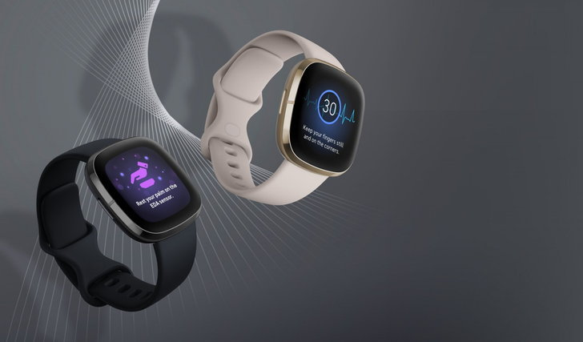มาพร้อมแบตเตอรี่ที่สามารถใช้งานได้นานกว่า 6 วัน นอกจากนี้ผู้ใช้งานยังสามารถทดลองใช้บริการ Fitbit PremiumTM ฟรีนานหกเดือน เพื่อให้คุณสามารถติดตามผลข้อมูลด้านสุขภาพและความเป็นอยู่ที่ดี เช่น การติดตามความแปรผันของหัวใจ หรือ Heart Rate Variability (HRV) อัตราการหายใจ และเซ็นเซอร์วิเคราะห์ความอิ่มตัวของออกซิเจนในเลือดแดง หรือ SpO2 ที่มาพร้อมกับแผงข้อมูลด้านสุขภาพที่ออกแบบใหม่ เป็นต้น
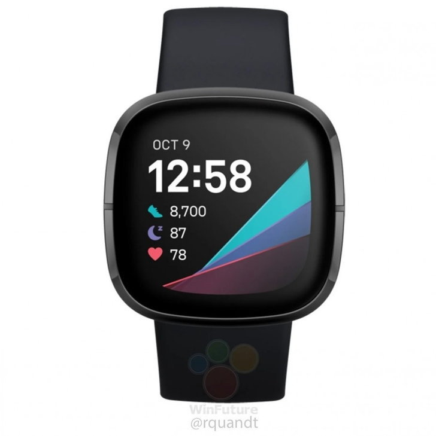 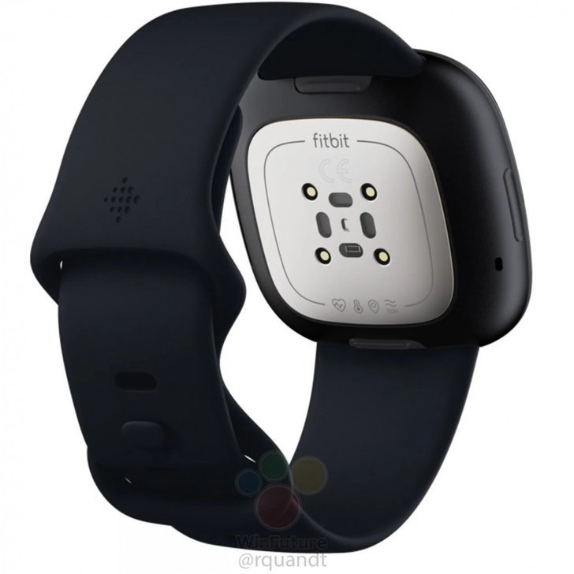พร้อมกันนี้ ฟิตบิท ยังได้เปิดตัว Fitbit Versa 3TM ที่มาพร้อมฟีเจอร์ใหม่เพื่อสุขภาพ ฟิตเนส และความสะดวกสบายมากมาย รวมถึงระบบ GPS เสริมด้วย Google Assistant นอกจากนี้ ฟิตบิท ยังนำเสนอ Fitbit Inspire 2TM จากตระกูลแทรคเกอร์ ที่มาพร้อมแบตเตอรี่ที่สามารถใช้งานได้นานกว่า 10 วัน และฟีเจอร์เพื่อสุขภาพและการออกกำลังกายอย่าง Active Zone Minutes (AZM) ขณะที่ผู้ใช้งานยังสามารถทดลองใช้บริการ Fitbit Premium ฟรีนานหนึ่งปี
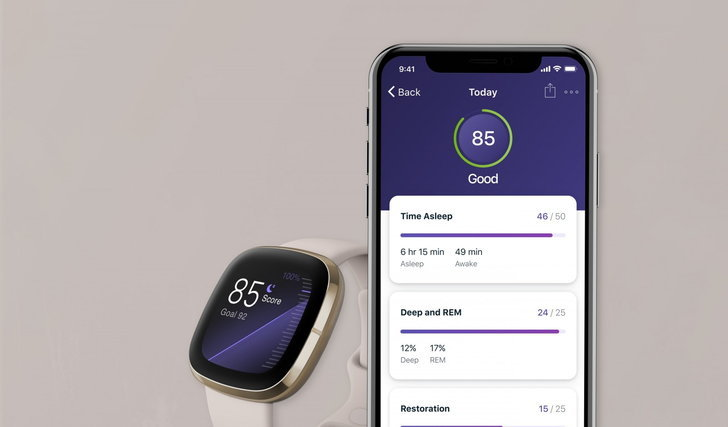“ความตั้งใจของเราในการทำให้ทุก ๆ คนบนโลกมีสุขภาพที่ดียิ่งขึ้น กลายเป็นเรื่องที่สำคัญอย่างที่ไม่เคยเป็นมาก่อน การแพร่ระบาดของเชื้อไวรัสโควิด-19 ทำให้เรายิ่งตระหนักถึงความสำคัญด้านสุขภาพทั้งทางกายและใจ” นายเจมส์ ปาร์ค ผู้ร่วมก่อตั้งและประธานเจ้าหน้าที่บริหารของฟิตบิท กล่าว “ผลิตภัณฑ์และบริการล่าสุดจากเรา นับได้ว่าเป็นนวัตกรรมที่ล้ำสมัยที่สุดที่ฟิตบิทได้พัฒนาขึ้น
ซึ่งก็รวมถึงเทคโนโลยีเซ็นเซอร์และอัลกอริทึมต่าง ๆ ที่ช่วยปลดล็อกข้อมูลด้านร่างกายและสุขภาพเพื่อให้คุณสามารถควบคุมดูแลตนเองได้ง่ายดายยิ่งขึ้น และด้วยการพัฒนาอุปกรณ์แวร์เอเบิลในรูปแบบที่ไม่เคยเกิดขึ้นมาก่อน ทำให้คุณเข้าใจและสามารถบริหารจัดการความเครียดและสุขภาพหัวใจ ผ่านแผงข้อมูลที่เข้าใจง่าย
ทำให้คุณสามารถติดตามข้อมูลสุขภาพ เช่น อุณหภูมิผิว อัตราการเต้นของหัวใจ และ SpO2 ทำให้คุณเห็นว่าทุกอย่างสัมพันธ์การอย่างไร และที่สำคัญคือ เราสามารถทำให้ทุกคนเข้าถึงการมีสุขภาพดีได้ด้วยข้อมูลที่คุณมักจะได้รับจากแพทย์เพียงแค่หนึ่งถึงสองครั้งต่อปี เพื่อให้คุณสามารถดูแลสุขภาพแบบองค์รวมในช่วงเวลาที่คุณต้องการมากที่สุดเช่นในเวลานี้”
มอบประสบการณ์ใหม่โดย Fitbit Sense จัดเก็บข้อมูลสำคัญเกี่ยวกับร่างกายที่ตอบสนองต่อความเครียด ด้วยเซ็นเซอร์ตรวจจับสัญญาณ EDA (Electrodermal Activity) เพียงวางฝ่ามือลงบนหน้าปัดของเครื่องเพื่อวัดระดับความเข้มข้นของเหงื่อบนผิว และเก็บข้อมูลความคืบหน้าด้านสุขภาพจิต พร้อมด้วยฟีเจอร์ Stress Management Score คะแนนจาก 1-100 โดยคะแนนสูงหมายถึงภาวะร่างกายที่มีสัญญาณความเครียดน้อย และการให้คำแนะนำในการจัดการความเครียดอย่างมีประสิทธิภาพ ไม่ว่าจะเป็นการฝึกหัดหายใจ และเครื่องมือช่วยทำสมาธิในรูปแบบต่างๆ
สมาชิกแบบพรีเมียมสามารถเลือกรูปแบบการทำสมาธิได้ถึงกว่า 100 รูปแบบจากแบรนด์ดังอย่าง Aaptiv, Aura, Breethe และ Ten Percent Happier รวมถึงติดตามผลความคืบหน้าการของสติที่ส่งผลต่ออารมณ์ของคุณ
นอกจากนี้ยังได้รวมนวัตกรรมด้านสุขภาพหัวใจไว้ใน Fitbit Sense นำเสนอการวัดอัตราการเต้นของหัวใจผ่านข้อมือตลอด 24 ชั่วโมง และ Active Zone Minutes™ Fitbit Sense ยังเป็นผลิตภัณฑ์แรกของฟิตบิทที่มีแอป ECG เพื่อติดตามคลื่นหัวใจ ตรวจสอบความเสี่ยงภาวะหัวใจสั่น หรือ Atrial Fibrillation (AFib) ด้วยการวางนิ้วมือลงบนมุมข้างใดข้างหนึ่งของวงแหวนนาฬิกาประมาณ 30 วินาที ให้อุปกรณ์อ่านข้อมูลที่คุณสามารถดาวน์โหลดและแชร์ให้กับแพทย์ได้
เทคโนโลยี PurePulse 2.0 การวัดอัตราการเต้นของหัวใจที่ทันสมัยที่สุดของฟิตบิท แจ้งเตือนอัตราการเต้นของหัวใจแบบสูงต่ำบนเครื่องที่ออกแบบมาเฉพาะบุคคลตลอด 24 และแจ้งเตือนหากอัตราการเต้นของหัวใจผิดปรกติ แม้ว่าจะมีหลายปัจจัยที่กระทบต่ออัตราการเต้นของหัวใจ เช่น ความเครียดหรืออุณหภูมิ แต่อัตราการเต้นจังหวะสูงต่ำนั้นอาจเป็นสัญญาณถึงความเสี่ยงด้านสภาวะหัวใจที่อาจต้องปรึกษาแพทย์ เช่น ภาวะหัวใจเต้นช้ากว่าปกติ (Bradycardia) หรือ ภาวะหัวใจเต้นผิดจังหวะ หรือเต้นเร็วผิดปรกติ (Tachycardia)
Fitbit Sense ยังมีฟีเจอร์ด้านสุขภาพและการออกกำลังกายที่สำคัญเหมือนฟิตบิทรุ่นอื่นๆ เช่น GPS และโหมดการออกกำลังกายกว่า 20 โหมด ฟีเจอร์อัตโนมัติ SmartTrack® Cardio Fitness Level and Score และเครื่องมือตรวจวัดคุณภาพการนอน และฟีเจอร์ใหม่ๆ เช่น ลำโพงและไมโครโฟนในตัวเพื่อให้สามารถตอบรับข้อความและออกคำสั่งจากเสียงผ่าน Amazon Alexa หรือ Google การใช้จ่ายแบบไร้สัมผัส
การเข้าถึงแอปและหน้าปัดอีกกว่าพันรายการ แบตเตอรี่สามารถใช้งานได้นานถึง 6 วัน พร้อมกับดีไซน์และนวัตกรรมล้ำสมัย ที่ออกแบบมาเพื่อให้ง่ายต่อการใช้งาน น้ำหนักเบา และทนทานด้วยโครงสร้างอลูมิเนียมที่ใช้ในการผลิตอากาศยาน กันน้ำได้ลึกถึง 50 เมตร หน้าจอแบบ AMOLED ที่ใหญ่ขึ้น ยังมีเซ็นเซอร์แสงที่จะหรี่ลงอัตโนมัติเพื่อความสบายตาในการมอง พร้อมการแสดงผลแบบ always-on ตอบสนองเร็วและมีความละเอียดสูง สามารถดูข้อมูลเพิ่มเติมเกี่ยวกับ Fitbit Sense
Fitbit Versa 3 ที่จะทำให้คุณชอบมากกว่า 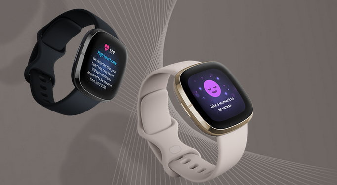ฟิตบิทยังได้เปิดตัว Fitbit Versa 3 จากตระกูลสมาร์ทวอทช์ยอดนิยม พร้อมฟีเจอร์ด้านสุขภาพ การออกกำลังกายและความสะดวกสบายในการใช้งาน ระบบ GPS บนเครื่อง แผนผังความเข้มข้นในการออกกำลังกาย และเทคโนโลยี PurePulse 2.0 รวมถึง Active Zone Minutes ที่จะให้คุณสามารถทำตามเป้าหมายด้านสุขภาพของคุณได้อย่างง่ายดายเสียยิ่งกว่าการวัดก้าวในแต่ละวัน
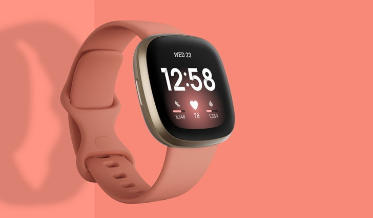 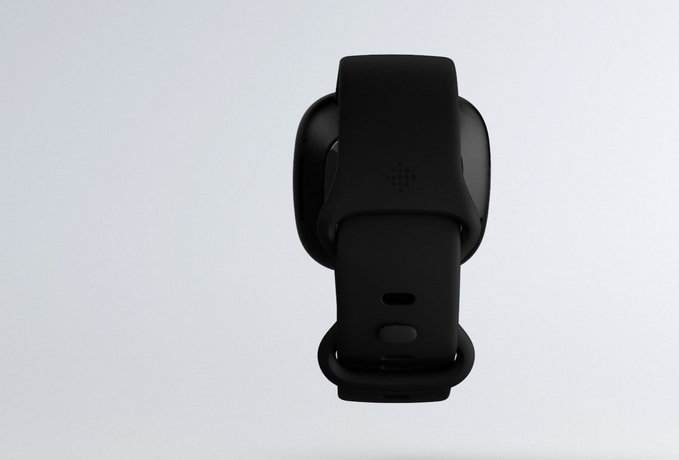นอกจากนี้ Fitbit Versa 3 ยังมาพร้อมลำโพงและไมโครโฟนในตัวสำหรับการรับส่งข้อความและการรับโทรศัพท์ หรือแม้แต่การส่งสายไปที่วอยซ์เมลและปรับระดับเสียงได้จากข้อมือ นอกจากนี้ยังสามารถใช้งานคำสั่งเสียงจาก Google Assistant และ Amazon Alexa Built-in ที่มีมาในเครื่อง
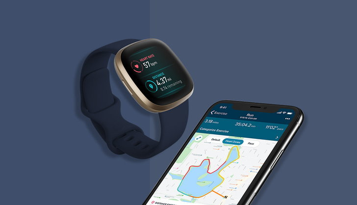ตั้งเตือนการออกกำลังกาย การทำสมาธิ หรือเวลานอน รวมไปถึงเช็กสภาพอากาศ การเพิ่มตารางช็อปปิ้งหรือการล้างมือ หรือแม้แต่ควบคุมอุปกรณ์อัจฉริยะภายในบ้านได้จากการออกคำสั่งตรงจากนาฬิกา นอกจากนี้ยังสามารถใช้บริการ Fitbit Pay™ เพื่อการใช้จ่ายที่ปลอดภัยและหลีกเลี่ยงการสัมผัส และยังสามารถเข้าถึงแอปและหน้าปัดกว่าอีก 1,000 รายการ
คุณยังสามารถเลือกฟังเพลงจากพันธมิตรทางดนตรีอย่าง Deezer, Pandora และ Spotify เพื่อความสนุกสนานในการออกกำลังกาย การออกแบบมีความทันสมัยคล้ายคลึงกับ Fitbit Sense เพื่อความสะดวกสบายและความรวดเร็วในการใช้งาน
พร้อมเปิดแท่นชาร์จแบบระบบแม็กเนติกที่สามารถใช้ร่วมกันได้ระหว่าง Fitbit Versa 3 และ Fitbit Sense เพิ่มประสิทธิภาพด้วยการใช้งานแบตเตอรี่ที่ยาวนานถึง 6 วัน และหากแบตเตอรี่เริ่มอ่อน คุณสามารถชาร์จแบบเร่งด่วนเพียง 12 นาที เพื่อเพิ่มระยะเวลาการใช้งานอีกหนึ่งวัน คุณสามารถดูข้อมูลเพิ่มเติมเกี่ยวกับ Fitbit Versa 3
ให้คุณได้มากกว่าด้วย Fitbit Inspire 2 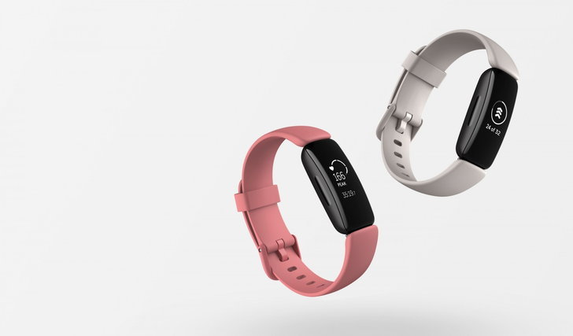ความสำเร็จของ Fitbit Inspire และ Inspire HR ไม่ได้มีเพียงสไตล์การออกแบบที่โดดเด่น แต่ยังมาพร้อมกับราคาที่จับต้องได้ Fitbit Inspire 2 จึงได้เพิ่มคุณสมบัติขั้นสูง เช่น Active Zone Minutes การออกแบบที่ทันสมัยขึ้น ตัวเครื่องที่ถูกออกแบบให้บางและหน้าจอที่สว่างยิ่งขึ้น
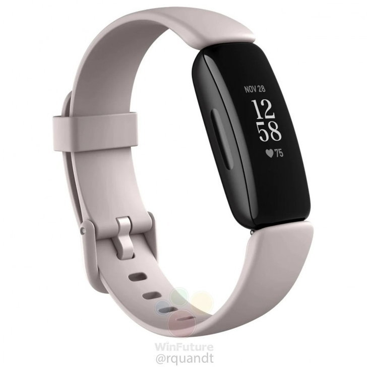 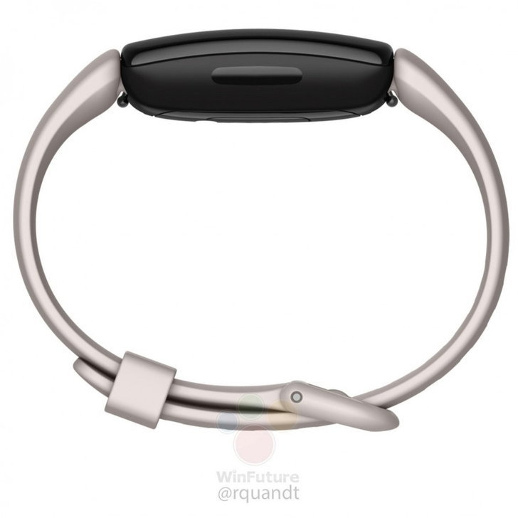พร้อมอายุการใช้งานแบตเตอรี่ที่ยาวนานที่สุดจากทุกอุปกรณ์ของ Fitbit โดยสามารถใช้ได้ 10 วัน ฟิตเนส แทรคเกอร์ที่ใช้ได้ง่ายจะเป็นตัวช่วยเพื่อให้คุณสร้างวินัยที่ดีต่อสุขภาพ ด้วยหมวดหมู่การออกกำลังกายตามเป้าหมายกว่า 20 หมวด ระบบติดตามการนอนหลับขั้นสูง ระบบติดตามอัตราการเต้นของหัวใจตลอด 24 ชั่วโมง ติดตามสุขภาพประจำเดือน รวมไปถึงการตรวจสอบสารอาหารและการดื่มน้ำ ควบคู่กับน้ำหนักของผู้ใช้งาน สร้างแรงกระตุ้นผ่านอุปกรณ์บนข้อมือ พร้อมด้วยการทดลองใช้งาน Fitbit Premium ฟรี 1 ปี ช่วยให้ Fitbit Inspire 2 มีคุณค่าเพิ่มขึ้นในการให้คำแนะนำและแรงจูงใจในการบรรลุเป้าหมายด้านสุขภาพ ข้อมูลเพิ่มเติมเกี่ยวกับ Fitbit Inspire 2
Fitbit Premium ให้คุณได้มากขึ้นจากอุปกรณ์ฟิตบิทของคุณFitbit Premium ยกระดับประสบการณ์ฟิตบิทเมื่อจับคู่กับอุปกรณ์ของฟิตบิท ปลดล็อคการวิเคราะห์ข้อมูล และข้อมูลเชิงลึกเฉพาะบุคคลที่เป็นการเชื่อมต่อกิจกรรมต่างๆ ของคุณ รวมไปถึงการนอนและจังหวะการเต้นหัวใจ Fitbit Premium นำเสนอเครื่องมือด้านการนอนหลับขั้นสูง
คลิปการออกกำลังกายมากกว่าร้อยรายการจากสตูดิโอชื่อดัง เช่น Aaptiv barre3 Daily Burn Down Dogobé Physique 57 POPSUGAR และ Yoga Studio โดย Gaiam เช่นเดียวกับเทรนเนอร์และอินฟลูเอนเซอร์ที่มีชื่อเสียง อย่าง Aaptiv Aura Breethe และ Ten Percent Happier
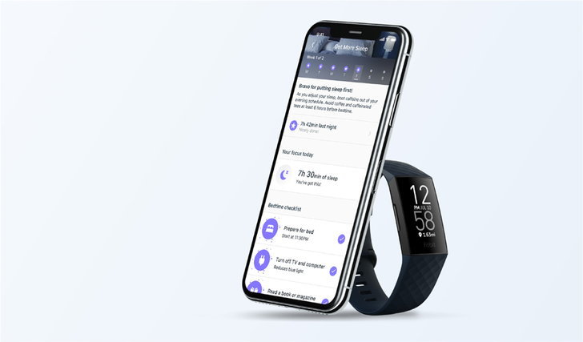รวมถึงเกมและความท้าทายต่าง ๆ ที่จะสร้างแรงบันดาลใจ แนะนำกิจกรรม การนอนหลับและโภชนาการ ตลอดจนรายงานสุขภาพเพื่อร่วมแบ่งปันในทีม Fitbit Premium ยังคงต่อยอดการบริการข้อเสนอต่างๆ และขยายการเข้าถึง ด้วยผู้ใช้บริการแบบพรีเมียมกว่า 500,000 รายทั่วโลก
หลังเปิดบริการเพียงหนึ่งปี พรีเมียมจะมีการขยายบริการไปยังภาษาดัตช์ ภาษาฝรั่งเศส ภาษาเยอรมัน ภาษาอิตาเลียน ภาษาญี่ปุ่น ภาษาสเปน และภาษาสวีดิชภายในปลายเดือนกันยายน ซึ่งจะเพิ่มศักยภาพให้ผู้ใช้ฟิตบิทโลกได้รับประโยชน์มากขึ้นจากการให้บริการ
ราคาและการวางจำหน่าย 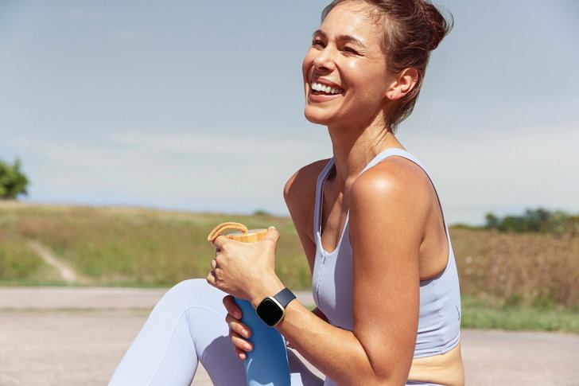Fitbit Sense จำหน่ายในราคา 11,990 บาท Fitbit Versa 3 ในราคา 9,190 บาท พร้อมจำหน่ายอุปกรณ์เสริมสำหรับ Fitbit Sense และ Fitbit Versa 3 หลายรูปแบบรวมถึงสายถักจากไนลอนรีไซเคิล (REPREVE®)
นอกจากนี้ยังมีสายแบบถักสานจาก Pendleton® และ Victor Glemaud สำหรับสายถักเชฟรอน โดยราคาเริ่มต้นที่ 1,190 บาท Fitbit Inspire 2 วางจำหน่ายในราคา 3,990 บาท พร้อมจำหน่ายอุปกรณ์เสริมสำหรับ Fitbit Inspire 2 อาทิ สายหนังพรีเมียม Horween® และคลิปรัดสายนาฬิกาสีดำโดยราคาอุกรณ์เสริมของ Fitbit Inspire 2 จะเริ่มต้นที่ 990 บาท
Fitbit Premium เปิดให้บริการโดยราคาอยู่ที่ 300 บาทต่อเดือน หรือ 2,500 บาทต่อปี สำหรับผู้ใช้ Fitbit Premium นอกจากนี้ยังสามารถใช้บริการได้ในประเทศสิงคโปร์ สามารถเยี่ยมชมได้ผ่าน Fitbit app